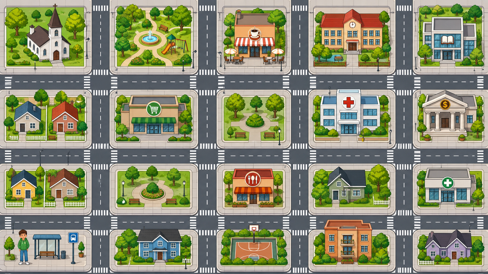

Guided interviewOne spoken question at a time
Complete Course speaking practice
Complete Course Oral Review
Meet your virtual interviewer and answer seven balanced questions selected from a 15-question bank covering all six course units. Review every transcription and practise the complete course as many times as you need.
First-time supportTwo answer structures for every question
Private practiceAudio is transcribed temporarily and is not saved
Before you begin
A short, friendly interview
You will hear seven questions selected from all six course units. Listen, use the answer structures, vocabulary bank, and grammar clue if you need help, then respond with your own information.
- 1ListenPlay the interviewer at 0.75× or 1×.
- 2PrepareUse one of the two suggested structures.
- 3AnswerRecord, stop, and wait for your transcription.
- 4ReviewTry again or continue to the next question.
Microphone check
You can test the microphone now, or allow access when you answer question 1.
Question 1 of 7Personal information
EmmaYour virtual interviewer
Ready to ask your question
Speed

Prepare your answer
Choose one structure
Replace every blank with your own information. You do not have to repeat the model word for word.
Vocabulary bank
Grammar clue
Microphone level
Waiting
Ready for your answer
Tap the microphone and answer in English.
00:00 / 00:22Your transcription will appear here after you finish.
Practice completed
Your complete interview report
0out of 100
Practice Readiness Score
Keep practicing
This is an automatic practice result, not an official course grade.Your strengths
What worked well
Next priorities
What to practice next
Pronunciation clarity
Words to pronounce more clearly
These words had lower Whisper confidence. This can indicate pronunciation, microphone noise, or an unfamiliar proper name; it is not a definitive pronunciation error.
Unlimited practice
Your recent attempts
Question-by-question feedback